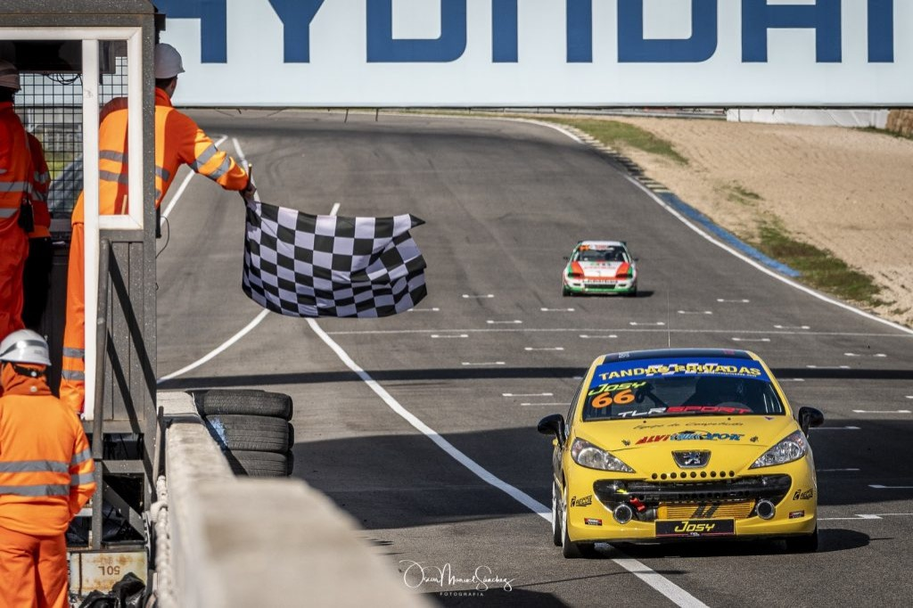

My academic journey began with a Bachelor's degree in Physics, specializing in Materials (strange, right?), at the Universidad Europea de Madrid (2019-2023). Since I realized materials weren’t my thing, during my thesis, I worked on simulating the diffuse emission of the galaxy within the context of the LiteBIRD space mission, supervised by Dr. Marcos López–Caniego Alcarria. Later, I pursued a Master's in Theoretical Physics at the Universidad Autónoma de Madrid (2023-2024), where I developed my thesis on multimessenger signatures of particle acceleration by black holes, under the supervision of Dr. Rafael Alves Batista.
Since October 2024, I have continued my academic path in the Master's program in Advanced Physics and Applied Mathematics at the Universitat de les Illes Balears. Currently, my thesis focuses on exploring the rich numerical phenomenology of the binary black hole ringdown, under the direction of Dr. Xisco Jiménez Forteza, in a project that is part of the AECT-2025-1-0011 allocation at the Barcelona Supercomputing Center (MareNostrum 5).
Throughout my studies, I have had the opportunity to learn and work with various tools, such as Teuk-Fortran-2020, which I use to solve (or at least try to) the Teukolsky equations, and I have taken specialized courses in general relativity, gravitational waves, dynamical systems, and quantum field theory. Additionally, my studies in applied mathematics have allowed me to explore new areas, such as mathematical models in neuroscience and image restoration.
In my professional career, I have gained diverse work experience, including my time as a futsal assistant referee with the Royal Spanish Football Federation (I reached 2nd Division “B,” the third-highest tier in Spain) and as an intern at the Blas Cabrera Institute of Physical Chemistry at the CSIC, where I spent four months learning what a real laboratory is like in the Surface Analysis and Mössbauer Spectroscopy Group, under the supervision of Dr. José Francisco Marco Sanz. I’ve also worked (and sometimes still do) at the Madrid Jarama Circuit as a track marshal (those people waving the colored flags) and as a timekeeper at FIA rallies.
My language skills include native proficiency in Spanish and Ukrainian, and professional proficiency in English. Additionally, during my time in Mallorca, I picked up a "miqueta" of Catalan. As for my technical skills, I’m proficient in several programming languages such as Python, C++, MATLAB, and Mathematica. I also have experience with software related directly to astronomy, including Aladin, SASDABA (Star Analyser Spectroscopic Data Base), TOPCAT (Tool for Operations on Catalogues and Tables), and VOSA (VO Sed Analyzer).
My passion for science and research goes beyond the classroom. I’ve also had the opportunity to participate in various projects, such as estimating the age of star clusters in the Heart Nebula, which I conducted during a research stay at the Calar Alto Astronomical Observatory in February 2024.
Note: If reading all of this bores you, here’s a much shorter version of my CV for download. But anyway, you’ve already read it all. :)
Yes, that’s me waving the flag!